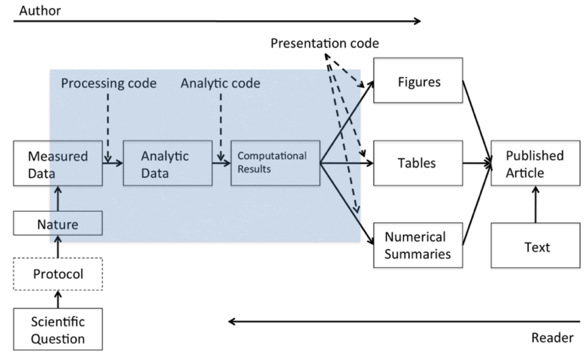
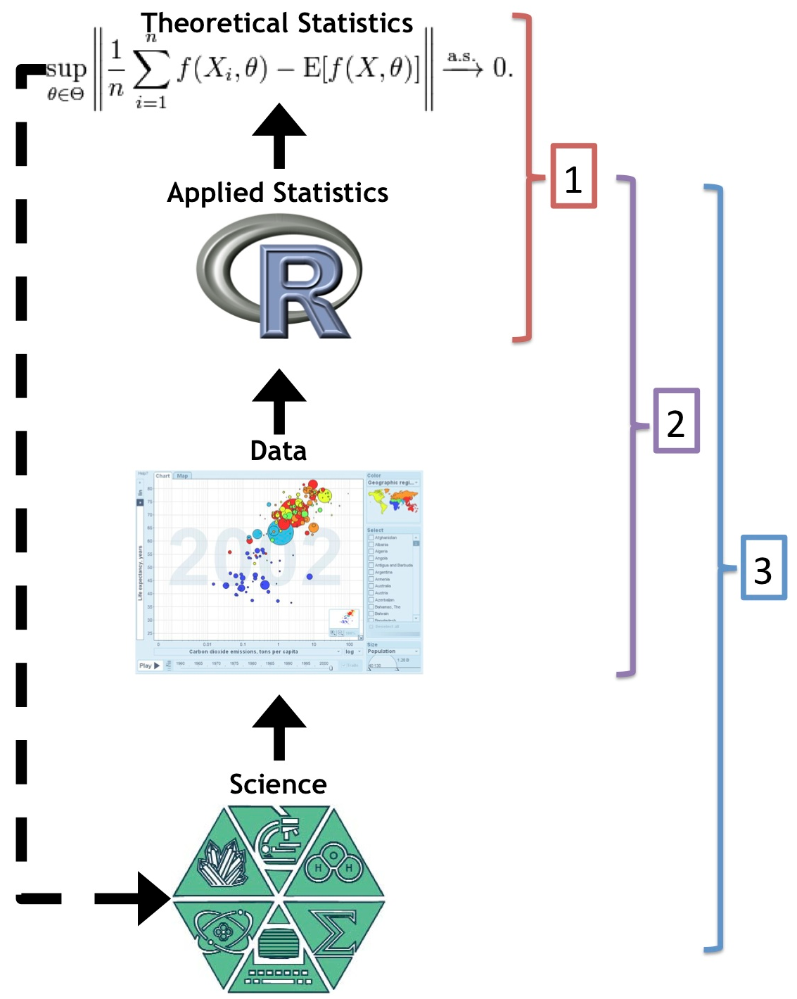
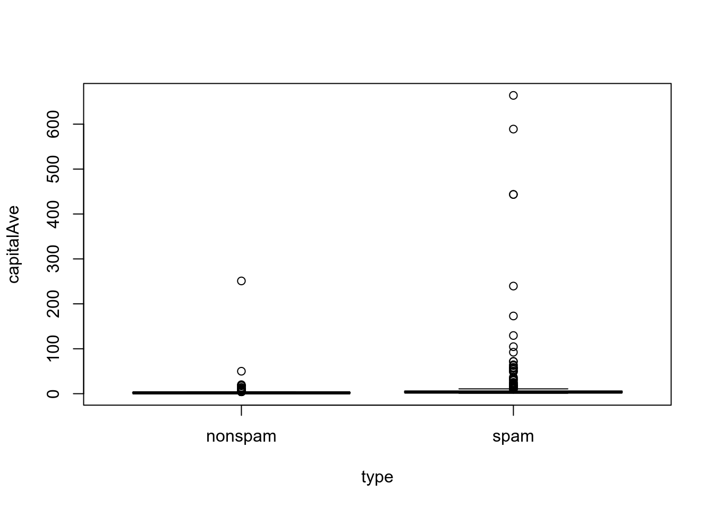
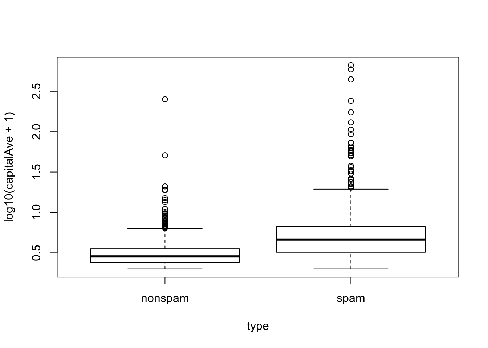
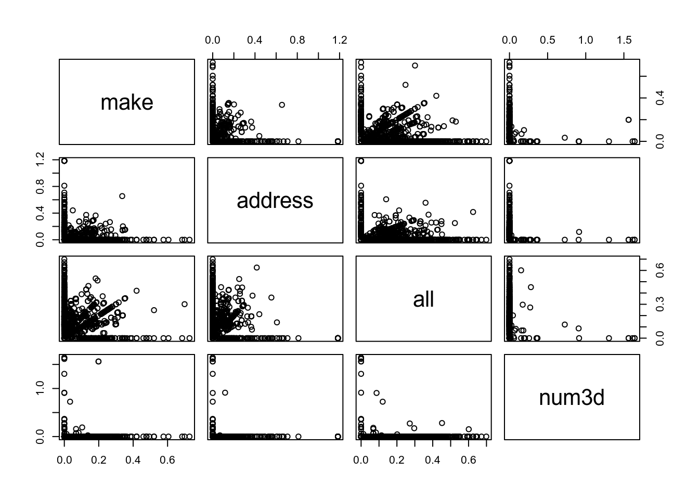
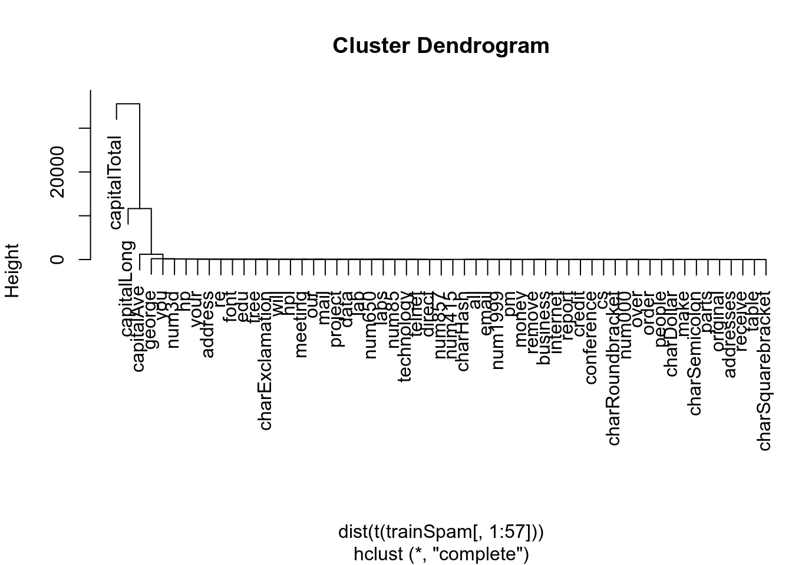
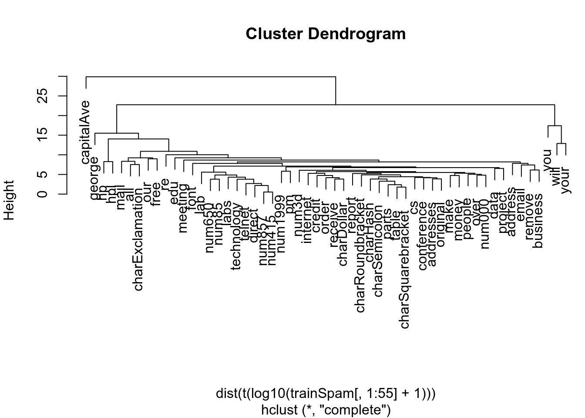

As we know, science, in general, is based upon a key idea:
There’s replication when scientific questions are examined and verified independently by different scientists.
It is the gold standard for scientific validity.
The goal is to have independent people to do independent things with different data, different methods and different laboratories and see if we get the same result.
If a relationship in nature is truly there, then it should be robust to having different people discover it in different ways.
Replication can be difficult and often there are no resources to independently replicate a study.
There are a lot of good reasons why we can’t replicate a study.
This happens with big studies involving a lot of money.
When the original study took decades to do.
Studies over unique situations in time or population.
Is there another alternative to replication, besides doing nothing?
Here is where reproducibility comes in: data and code are re-analyzed by independent scientists to obtain the same results of the original investigator.
What reproducible reporting is about is a validation of the data analysis (the data of the original study and the computational methods are made available so that other people can look at that data and run that kind of analysis in order to come to the same original findings).
This is how we can fill the gap between the gold standard (replication) and the worst standard (doing nothing).
It’s a reasonable minimum standard when replication is not possible.
In non-research settings, often full replication isn’t even the point. Often the goal is to preserve something to the point where anybody in an organization can repeat what we did (for example, after we leave the organization). In this case, reproducibility is key to maintaining the history of a project and making sure that every step along the way is clear.
What we’re talking about in this course, reproducible research, is basically, how do we develop the score (partitura) for data analysis so that we can communicate to someone what was done and, if they want to reproduce the work, how to do it.
Now the fundamental problem in data analysis is that we don’t really have an agreed upon notation system for communicating data analysis.
In this course, we’re gonna focus on how to communicate data analysis using code, by writing documents that are very dynamic and by sharing data so that other people can reproduce the work that we’re doing.
If there’s one rule that we would want to adhere to make our work as reproducible as possible is that you should script everything.
This course will be essentially about defining and developing the notation of specifying a research project or a data analysis (how do we write down the things that we did and how we did them).
And the way that we do that, essentially, is through scripting. We write down computer programs. We give instructions to the computer and tell it what to do at any given time with what type of data.
The more we can script (or the less we can do things on your own by hand), the better and the more reproducible our work will be.
Data tend to be more complex and extremely high dimensional, as new technologies are increasing data collection throughput.
Existing databases can be merged into new “megadatabases”.
More sophisticated analyses can be done, as computer power is continuously increasing.
The models that we fit and the algorithms that we run, are much much more complicated than they used to be. Having a basic understanding of these algorithms is difficult, even for a sophisticated person, and it’s almost impossible to describe these algorithms with words alone.
Understanding what someone did in a data analysis now requires looking at code and scrutinizing the computer programs that people used.
All this explains why, nowadays, for every field of study (such as biology, chemistry, environmental science, etc.) there’s a computational version of it (a computational biology, computational astronomy, etc.).
As an example in the medicine field, the Institute of Medicine (IOM) of the National Academies, in response to a lot of events involving reproducibility of scientific studies, issued a report about best practices in reproducibility (particularly in what’s called ’omics based research, such as genomics, proteomics, other similar areas involving high-throughput biological measurements).
Of the many recommendations that the IOM made, the key ones were that:
Data and metadata need to be made publicly available.
Computer code used should be fully specified, so that people can examine it to see what was done.
All the steps of the computational analysis, including any preprocessing of data, should be fully described so that people can study it and reproduce it.
Decide to do it (ideally from the start).
A basic answer is that we have to decide to do it.
And you can decide to do this at any point in our analysis, but it’s usually easiest to do it at the very beginning. If we decide at the very end that we want to make our analysis reproducible, then it often is much harder to do and maybe even impossible.
Keep track of things, perhaps with a version control system to track snapshots/changes.
We want to keep track of things as we go along.
We can use a version control system like Git of SVN, for instance.
Use software whose operation can be coded.
It’s important to use software, statistical software, whose operation can be coded.
The idea is that we can write down the instructions that were used to manipulate or analyze the data.
This generally rules out graphical user interfaces unless those programs will code or keep track of all the clicks that we make on the graphical user interface.
In systems like R we have to program explicitly everything that we do to the data.
Don’t save output.
Another key lesson is to not save any output.
By output, we mean mostly temporary data transformations.
So if we pre-process the data and have a clean dataset, rather than store the clean dataset, it might be better just to have the raw dataset with the preprocessing code, because then we not only can make the final product, but we can see how we got there. If we just keep the clean dataset and then accidentally lose the preprocessing code, then we don’t really have a good record of how we got from A to B.
So, rather than keeping the temporary products or even final products, try to keep the original products and the code that got you there.
Save data in non-propietary formats.
Finally try not to save data in non-proprietary formats.
These are data formats where the layout of the dataset is not publicly known.
There are not too many proprietary formats out there any more that are commonly used like they were before.
So using non-proprietary, even textual formats, may be compressed, can be much better at making our research or analysis more reproducible.
The process of conducting and disseminating research can be depicted as a “data science pipeline”.

The basic idea behind reproducibility is to focus on:
More precisely, there are four things that are required to make results reproducible:
Literate statistical programming tools can make it easier to write up reproducible documents containing data analyses.
This come from literate programming in the area of writing computer programs.
We can read in Wikipedia:
“Literate programming is a programming paradigm
introduced by Donald Knuth in which a computer program
is given an explanation of its logic in a natural
language, such as English, interspersed with snippets of macros
and traditional source code, from which compilable source code can
be generated”.
So a literate statistical program or a literate statistical analysis is a stream of text (readable by people) and code (readable by computers).
Literate programs, therefore, are processed in two ways.
They are weaved (tejidos) to produce human readable documents, like PDFs or HTML web pages.
And they are tangled to produce machine readable code.
So the basic idea behind literate programming is that we only need a single source document in order to generate the different kinds of output we might need.
In order to use a system like this we need:
A documentational language, that’s human readable.
And a programming language that’s machine readable (or can be compiled/interpreted into something that’s machine readable).
Knuth’s original WEB system used:
TeX as the documentation language.Pascal as the programming language.Another one of the original literate programming systems in R that was designed to do this was called Sweave (“S”weave).
LaTeX.R.There are many limitations to the original Sweave system.
The knitr package for R takes a lot of these ideas of literate programming and updates and improves upon them, providing much more powerful functionality, including the ability to write in Markdown and create a variety of output formats.
R as its programming
language, but it allows us to mix other programming
languages in.LaTeX, Markdown and
HTML.knitr was developed by Yihui Xie while he was a graduate
student at Iowa State and it has become a very popular package for
writing literate statistical programs.
Let’s see a useful template for understanding what the pieces of a data analysis are and how they typically flow together.
If one were to write down the steps in a data analysis, we might come up with something along these lines of the following list
There may be little things that you might want to add or delete.
But most data analyses have some subset of these steps.
“Ask yourselves, what problem have you solved, ever, that was worth solving, where you knew all of the given information in advance? Where you didn’t have a surplus of information and have to filter it out, or you had insufficient information and have to go find some?” Dan Myer, Mathematics Educator
That’s a key element of data analysis. Typically:
The first part of data analysis that we want to start with is defining a question.
Defining a question is the most powerful dimension reduction tool you can ever employ.
Sometimes we only want to look at a dataset and see what is inside of it.

The science, generally speaking, will determine what type of question we’re interested in asking.
A general question might be:
If we want to turn that into a data analysis problem there are many ways to answer the question.
For example, we could hire someone to go through our email and figure out what’s spam and what’s not.
But that’s not really sustainable, and it’s not particularly efficient.
So, if we want to turn this into a data analysis question, we have to make the question a little bit more concrete and translate it using terms that are specific to data analysis tools.
A more concrete version of this question might be: can we use quantitative characteristics of the emails themselves to classify them as spam?
Now we can start looking at emails and try to identify these quantitative characteristics that we want to develop so that we can classify them as spam.
The dataset depend on our goal and type of question.
For our problem with spam, perhaps we use Gmail. And in this case our ideal dataset would be all the emails in the Gmail system stored on Google’s data centers.
That would be a whole population of emails.
Then we can just build our classifier based on all this data and we wouldn’t have to worry about sampling because we’d have all the data.
Of course, in the real world, we have to think about what data we can actually access.
The real scenarios are that:
Maybe someone at Google can actually access all the emails that go through Gmail, but even in that extreme case, it may be difficult.
The truth is that most people are not going to be able to access that.
One possible solution comes from the UCI machine learning repository, which is the spam dataset.
This is a collection of spam in a dataset created by people at Hewlett Packard who collected several thousand spam and regular messages, then classified them appropriately.
So we could use this database to explore our problem of how to classify emails into spam.
kernlab package and its spam dataset.The Hewlett Packard spam dataset is available
via the kernlab
package in R.
kernlab package, we can load the
data set right away.if (!require("kernlab")) {
install.packages("kernlab")
library(kernlab)
}
Loading required package: kernlab
Attaching package: 'kernlab'
The following object is masked from 'package:ggplot2':
alphaThe first goal is to try to obtain the raw data.
We should always reference and keep track of where the data came from (the source).
If we need to get data from a person or an investigator that we’re not familiar with, often a very polite email will go a long way. They may be willing to share that data with us.
If we will load the data from an internet source, record the url and time accessed.
As we saw in Getting and Cleaning Data course:
Raw data typically needs to be processed in some way.
If the data is pre-processed, it’s important that we understand how it was done.
Understand the source of the data.
For example if it came from a survey, we need to know how the sampling was done.
Was it a convenience sample, or did the data come from an observational study, or perhaps from experiments?
Data may need reformating, subsampling.
We may need to reformat the data in a certain way to get it to work in a certain type of analysis.
If the dataset is extremely large we may want to sub-sample it to make it more manageable.
Record these steps in scripts.
It is very important that anything we do to clean the data is recorded.
Write down these steps in scripts or whatever is most convenient because we or someone else is going to have to reproduce these steps if they want to reproduce our findings.
If we don’t document all these pre-processing steps, then no one will ever be able to do it again.
Determine if the data are good enough.
Once we have cleaned the data and we have gotten a basic look at it, it is important to determine if the data are good enough to solve your problems.
In some cases, we may determine that the data are not good enough.
If we determine the data are not good enough for our question, then:
We’ve got to quit, try again, change the data, or try a different question.
It is important to not simply push on with the data you have, just because that’s all that you’ve got, because that can lead to inappropriate inferences or conclusions.
Here is our cleaned data set from the kernlab package
that we’re going to use.
kernlab
package.data(spam)
str(spam)
'data.frame': 4601 obs. of 58 variables:
$ make : num 0 0.21 0.06 0 0 0 0 0 0.15 0.06 ...
$ address : num 0.64 0.28 0 0 0 0 0 0 0 0.12 ...
$ all : num 0.64 0.5 0.71 0 0 0 0 0 0.46 0.77 ...
$ num3d : num 0 0 0 0 0 0 0 0 0 0 ...
$ our : num 0.32 0.14 1.23 0.63 0.63 1.85 1.92 1.88 0.61 0.19 ...
$ over : num 0 0.28 0.19 0 0 0 0 0 0 0.32 ...
$ remove : num 0 0.21 0.19 0.31 0.31 0 0 0 0.3 0.38 ...
$ internet : num 0 0.07 0.12 0.63 0.63 1.85 0 1.88 0 0 ...
$ order : num 0 0 0.64 0.31 0.31 0 0 0 0.92 0.06 ...
$ mail : num 0 0.94 0.25 0.63 0.63 0 0.64 0 0.76 0 ...
$ receive : num 0 0.21 0.38 0.31 0.31 0 0.96 0 0.76 0 ...
$ will : num 0.64 0.79 0.45 0.31 0.31 0 1.28 0 0.92 0.64 ...
$ people : num 0 0.65 0.12 0.31 0.31 0 0 0 0 0.25 ...
$ report : num 0 0.21 0 0 0 0 0 0 0 0 ...
$ addresses : num 0 0.14 1.75 0 0 0 0 0 0 0.12 ...
$ free : num 0.32 0.14 0.06 0.31 0.31 0 0.96 0 0 0 ...
$ business : num 0 0.07 0.06 0 0 0 0 0 0 0 ...
$ email : num 1.29 0.28 1.03 0 0 0 0.32 0 0.15 0.12 ...
$ you : num 1.93 3.47 1.36 3.18 3.18 0 3.85 0 1.23 1.67 ...
$ credit : num 0 0 0.32 0 0 0 0 0 3.53 0.06 ...
$ your : num 0.96 1.59 0.51 0.31 0.31 0 0.64 0 2 0.71 ...
$ font : num 0 0 0 0 0 0 0 0 0 0 ...
$ num000 : num 0 0.43 1.16 0 0 0 0 0 0 0.19 ...
$ money : num 0 0.43 0.06 0 0 0 0 0 0.15 0 ...
$ hp : num 0 0 0 0 0 0 0 0 0 0 ...
$ hpl : num 0 0 0 0 0 0 0 0 0 0 ...
$ george : num 0 0 0 0 0 0 0 0 0 0 ...
$ num650 : num 0 0 0 0 0 0 0 0 0 0 ...
$ lab : num 0 0 0 0 0 0 0 0 0 0 ...
$ labs : num 0 0 0 0 0 0 0 0 0 0 ...
$ telnet : num 0 0 0 0 0 0 0 0 0 0 ...
$ num857 : num 0 0 0 0 0 0 0 0 0 0 ...
$ data : num 0 0 0 0 0 0 0 0 0.15 0 ...
$ num415 : num 0 0 0 0 0 0 0 0 0 0 ...
$ num85 : num 0 0 0 0 0 0 0 0 0 0 ...
$ technology : num 0 0 0 0 0 0 0 0 0 0 ...
$ num1999 : num 0 0.07 0 0 0 0 0 0 0 0 ...
$ parts : num 0 0 0 0 0 0 0 0 0 0 ...
$ pm : num 0 0 0 0 0 0 0 0 0 0 ...
$ direct : num 0 0 0.06 0 0 0 0 0 0 0 ...
$ cs : num 0 0 0 0 0 0 0 0 0 0 ...
$ meeting : num 0 0 0 0 0 0 0 0 0 0 ...
$ original : num 0 0 0.12 0 0 0 0 0 0.3 0 ...
$ project : num 0 0 0 0 0 0 0 0 0 0.06 ...
$ re : num 0 0 0.06 0 0 0 0 0 0 0 ...
$ edu : num 0 0 0.06 0 0 0 0 0 0 0 ...
$ table : num 0 0 0 0 0 0 0 0 0 0 ...
$ conference : num 0 0 0 0 0 0 0 0 0 0 ...
$ charSemicolon : num 0 0 0.01 0 0 0 0 0 0 0.04 ...
$ charRoundbracket : num 0 0.132 0.143 0.137 0.135 0.223 0.054 0.206 0.271 0.03 ...
$ charSquarebracket: num 0 0 0 0 0 0 0 0 0 0 ...
$ charExclamation : num 0.778 0.372 0.276 0.137 0.135 0 0.164 0 0.181 0.244 ...
$ charDollar : num 0 0.18 0.184 0 0 0 0.054 0 0.203 0.081 ...
$ charHash : num 0 0.048 0.01 0 0 0 0 0 0.022 0 ...
$ capitalAve : num 3.76 5.11 9.82 3.54 3.54 ...
$ capitalLong : num 61 101 485 40 40 15 4 11 445 43 ...
$ capitalTotal : num 278 1028 2259 191 191 ...
$ type : Factor w/ 2 levels "nonspam","spam": 2 2 2 2 2 2 2 2 2 2 ...The first thing that we need to do with this dataset if we want to build a model to classify emails into spam or not, is that we need to split the dataset into a test set and a training set.
We’re going to use part of the test of the dataset to build our model.
And then we’re going to use another part of the dataset which is independent of the first part to actually determine how good our model is making a prediction.
# Perform the subsampling
set.seed(3435)
trainIndicator = rbinom(4601, size = 1, prob = 0.5)
table(trainIndicator)
trainIndicator
0 1
2314 2287
trainSpam = spam[trainIndicator==1, ]
testSpam = spam[trainIndicator==0, ]rbinom()
function, to generate a random kind of coin flip with probability of
half.Let’s now look at what the data look like, what’s the distribution of the data, what are the relationships between the variables.
We want to:
We’re going to focus on the training dataset as we do our exploratory analysis and we build our model.
names(trainSpam)
[1] "make" "address" "all"
[4] "num3d" "our" "over"
[7] "remove" "internet" "order"
[10] "mail" "receive" "will"
[13] "people" "report" "addresses"
[16] "free" "business" "email"
[19] "you" "credit" "your"
[22] "font" "num000" "money"
[25] "hp" "hpl" "george"
[28] "num650" "lab" "labs"
[31] "telnet" "num857" "data"
[34] "num415" "num85" "technology"
[37] "num1999" "parts" "pm"
[40] "direct" "cs" "meeting"
[43] "original" "project" "re"
[46] "edu" "table" "conference"
[49] "charSemicolon" "charRoundbracket" "charSquarebracket"
[52] "charExclamation" "charDollar" "charHash"
[55] "capitalAve" "capitalLong" "capitalTotal"
[58] "type"
str(trainSpam)
'data.frame': 2287 obs. of 58 variables:
$ make : num 0 0 0.15 0 0 0 0 0 0 0 ...
$ address : num 0.64 0 0 0 0 0.42 0 0 0 0 ...
$ all : num 0.64 0 0.46 0.25 0 0.42 0 0.55 0 0 ...
$ num3d : num 0 0 0 0 0 0 0 0 0 0 ...
$ our : num 0.32 1.92 0.61 0.38 0.9 1.27 0 1.11 2.94 1.16 ...
$ over : num 0 0 0 0.25 0 0 0 0 0 0 ...
$ remove : num 0 0 0.3 0.25 0.9 0.42 0 0.18 0 0 ...
$ internet : num 0 0 0 0 0 0 0 0 0 0 ...
$ order : num 0 0 0.92 0 0 0 0 0 0 0 ...
$ mail : num 0 0.64 0.76 0 0.9 1.27 0 0 0 0 ...
$ receive : num 0 0.96 0.76 0.12 0.9 0 0 0 0 0 ...
$ will : num 0.64 1.28 0.92 0.12 0 0 0 0 0 0.58 ...
$ people : num 0 0 0 0.12 0.9 0 0 0.92 0 0 ...
$ report : num 0 0 0 0 0 0 0 0 0 0 ...
$ addresses : num 0 0 0 0 0 0 0 0.18 0 0 ...
$ free : num 0.32 0.96 0 0 0 1.27 0 0 2.94 1.16 ...
$ business : num 0 0 0 0 0 0 0 0.37 0 0 ...
$ email : num 1.29 0.32 0.15 0 0 0 0 0.37 0 1.16 ...
$ you : num 1.93 3.85 1.23 1.16 2.72 1.7 0 3.15 0 1.16 ...
$ credit : num 0 0 3.53 0 0 0.42 0 0 0 0 ...
$ your : num 0.96 0.64 2 0.77 0.9 1.27 2.11 0.92 0 1.75 ...
$ font : num 0 0 0 0 0 0 0 0 0 0 ...
$ num000 : num 0 0 0 0 0 0 0.7 0 0 0 ...
$ money : num 0 0 0.15 0 0 0.42 0 0 0 0 ...
$ hp : num 0 0 0 0 0 0 0 0 0 0 ...
$ hpl : num 0 0 0 0 0 0 0 0 0 0 ...
$ george : num 0 0 0 0 0 0 0 0 0 0 ...
$ num650 : num 0 0 0 0 0 0 0 0 0 0 ...
$ lab : num 0 0 0 0 0 0 0 0 0 0 ...
$ labs : num 0 0 0 0 0 0 0 0 0 0 ...
$ telnet : num 0 0 0 0 0 0 0 0 0 0 ...
$ num857 : num 0 0 0 0 0 0 0 0 0 0 ...
$ data : num 0 0 0.15 0 0 0 0 0 0 0 ...
$ num415 : num 0 0 0 0 0 0 0 0 0 0 ...
$ num85 : num 0 0 0 0 0 0 0 0 0 0 ...
$ technology : num 0 0 0 0 0 0 0 0 0 0 ...
$ num1999 : num 0 0 0 0 0 1.27 0 0 0 0 ...
$ parts : num 0 0 0 0 0 0 0 0 0 0 ...
$ pm : num 0 0 0 0 0 0 0 0 0 0 ...
$ direct : num 0 0 0 0 0 0.42 0 0 0 0 ...
$ cs : num 0 0 0 0 0 0 0 0 0 0 ...
$ meeting : num 0 0 0 0 0 0 0 0 0 0 ...
$ original : num 0 0 0.3 0 0 0 0 0 0 0 ...
$ project : num 0 0 0 0 0 0 0 0 0 0 ...
$ re : num 0 0 0 0 0 0 0 0 0 0 ...
$ edu : num 0 0 0 0 0 0 0 0 0 0 ...
$ table : num 0 0 0 0 0 0 0 0 0 0 ...
$ conference : num 0 0 0 0 0 0 0 0 0 0 ...
$ charSemicolon : num 0 0 0 0.022 0 0 0 0 0.404 0 ...
$ charRoundbracket : num 0 0.054 0.271 0.044 0 0.063 0 0.182 0.404 0.133 ...
$ charSquarebracket: num 0 0 0 0 0 0 0 0 0 0 ...
$ charExclamation : num 0.778 0.164 0.181 0.663 0 ...
$ charDollar : num 0 0.054 0.203 0 0 0.063 0.37 0 0 0 ...
$ charHash : num 0 0 0.022 0 0 0 0 0 0 0 ...
$ capitalAve : num 3.76 1.67 9.74 1.24 2.08 ...
$ capitalLong : num 61 4 445 11 7 55 95 4 12 5 ...
$ capitalTotal : num 278 112 1257 184 25 ...
$ type : Factor w/ 2 levels "nonspam","spam": 2 2 2 2 2 2 2 2 2 2 ...
head(trainSpam)
make address all num3d our over remove internet order mail receive will
1 0.00 0.64 0.64 0 0.32 0.00 0.00 0 0.00 0.00 0.00 0.64
7 0.00 0.00 0.00 0 1.92 0.00 0.00 0 0.00 0.64 0.96 1.28
9 0.15 0.00 0.46 0 0.61 0.00 0.30 0 0.92 0.76 0.76 0.92
12 0.00 0.00 0.25 0 0.38 0.25 0.25 0 0.00 0.00 0.12 0.12
14 0.00 0.00 0.00 0 0.90 0.00 0.90 0 0.00 0.90 0.90 0.00
16 0.00 0.42 0.42 0 1.27 0.00 0.42 0 0.00 1.27 0.00 0.00
people report addresses free business email you credit your font num000
1 0.00 0 0 0.32 0 1.29 1.93 0.00 0.96 0 0
7 0.00 0 0 0.96 0 0.32 3.85 0.00 0.64 0 0
9 0.00 0 0 0.00 0 0.15 1.23 3.53 2.00 0 0
12 0.12 0 0 0.00 0 0.00 1.16 0.00 0.77 0 0
14 0.90 0 0 0.00 0 0.00 2.72 0.00 0.90 0 0
16 0.00 0 0 1.27 0 0.00 1.70 0.42 1.27 0 0
money hp hpl george num650 lab labs telnet num857 data num415 num85
1 0.00 0 0 0 0 0 0 0 0 0.00 0 0
7 0.00 0 0 0 0 0 0 0 0 0.00 0 0
9 0.15 0 0 0 0 0 0 0 0 0.15 0 0
12 0.00 0 0 0 0 0 0 0 0 0.00 0 0
14 0.00 0 0 0 0 0 0 0 0 0.00 0 0
16 0.42 0 0 0 0 0 0 0 0 0.00 0 0
technology num1999 parts pm direct cs meeting original project re edu table
1 0 0.00 0 0 0.00 0 0 0.0 0 0 0 0
7 0 0.00 0 0 0.00 0 0 0.0 0 0 0 0
9 0 0.00 0 0 0.00 0 0 0.3 0 0 0 0
12 0 0.00 0 0 0.00 0 0 0.0 0 0 0 0
14 0 0.00 0 0 0.00 0 0 0.0 0 0 0 0
16 0 1.27 0 0 0.42 0 0 0.0 0 0 0 0
conference charSemicolon charRoundbracket charSquarebracket charExclamation
1 0 0.000 0.000 0 0.778
7 0 0.000 0.054 0 0.164
9 0 0.000 0.271 0 0.181
12 0 0.022 0.044 0 0.663
14 0 0.000 0.000 0 0.000
16 0 0.000 0.063 0 0.572
charDollar charHash capitalAve capitalLong capitalTotal type
1 0.000 0.000 3.756 61 278 spam
7 0.054 0.000 1.671 4 112 spam
9 0.203 0.022 9.744 445 1257 spam
12 0.000 0.000 1.243 11 184 spam
14 0.000 0.000 2.083 7 25 spam
16 0.063 0.000 5.659 55 249 spamLet’s see how many of the emails are classified as spam. That’s what
the variable type of this dataset tells us.
table(trainSpam$type)
nonspam spam
1381 906 We can make some plots and we can compare what are the frequencies of certain characteristics between the spam and the non spam emails.
Here we’re looking at a variable called capitalAve (the
average number of capital letters).
# Equivalently: plot(trainSpam$capitalAve ~ trainSpam$type)
boxplot(capitalAve ~ type, data = trainSpam)
# Equivalently: plot(log10(trainSpam$capitalAve + 1) ~ trainSpam$type)
boxplot(log10(capitalAve + 1) ~ type, data = trainSpam)
We can look at pairwise relationships between the different variables in the plots.
Here we’ve got a pairs plot of the first four variables (the log transformation of each of the variables).
# Equivalently: plot(log10(trainSpam[,1:4] + 1))
pairs(log10(trainSpam[, 1:4] + 1))
We can explore the predictors space a little bit more by doing a hierarchical cluster analysis.
Let’s then try to make a first cut with the hclust
function in R, plotting a dendrogram just to see what predictors
or what words or characteristics tend to cluster together.
par(mar = c(5, 4, 4, 0))
hCluster = hclust(dist(t(trainSpam[, 1:57])))
plot(hCluster)
capitalTotal.par(mar = c(5, 4, 4, 0))
hClusterUpdated = hclust(dist(t(log10(trainSpam[, 1:55] + 1))))
plot(hClusterUpdated)
captialAve is one kind of cluster all by itself.you will or
your.Once we’ve done exploratory data analysis, we’ve looked at some univariate and bivariate plots, we did a little cluster analysis, we can move on to doing a more sophisticated statistical model and some prediction modeling.
Any statistical modeling that we engage in:
Should be informed by the results of our exploratory analysis.
Exact methods depend on the question of interest.
Transformations/processing should be accounted for when necessary.
Measures of uncertainty should be reported (we should always think about, what are the sources of uncertainty in our dataset).
We’re going to do a very basic statistical model.
reformulate() function to create a
formula that includes the response, which is just the type of email and
one of the variables of the data set.glmFit, and then
subsequently calculate the cross validated error rate of predicting spam
emails from a single variable, cvError.trainSpam$numType = as.numeric(trainSpam$type) - 1
costFunction = function(x, y) sum(x != (y > 0.5))
cvError = rep(NA, 55)
library(boot)
for(i in 1:55) {
lmFormula = reformulate(names(trainSpam)[i], response = "numType")
glmFit = glm(lmFormula, family = "binomial", data = trainSpam)
cvError[i] = cv.glm(trainSpam, glmFit, costFunction, 2)$delta[2]
}cvError vector of
results to determine which one is the minimum.## Which predictor has minimum cross-validated error?
names(trainSpam)[which.min(cvError)]
[1] "charDollar"charDollar variable.We can now take the best model we found from the set of 55 predictors
(the charDollar variable) and just re-fit the
(logistic regression) model again.
predict()
function.
## Use the best model from the group
predictionModel = glm(numType ~ charDollar, family = "binomial", data = trainSpam)
## Get predictions on the test set
predictionTest = predict(predictionModel, testSpam)
predictedSpam = rep("nonspam", dim(testSpam)[1])
## Classify as `spam' for those with prob > 0.5
predictedSpam[predictionModel$fitted > 0.5] = "spam"Once we’ve created our classification, we can take a look at the predicted values from our model, and then compare them with the actual values from the test dataset, because we know which was spam, and which was not.
Here’s the classification table that we get from the predicted and the the real values.
## Classification table
table(predictedSpam, testSpam$type)
predictedSpam nonspam spam
nonspam 1346 458
spam 61 449## Error rate
(61 + 458) / (1346 + 458 + 61 + 449)
[1] 0.2242869So far we’ve done the analysis, calculated some results, calculated our best model, and looked at the error rate that’s produced by that model.
Now we need to interpret our findings and it’s important, when we do so, to:
In our example, we might think of stating that the fraction of characters that are dollar signs can be used to predict if an email is spam.
Maybe we decide that anything with more than 6.6% dollar signs is classified as spam.
More dollar signs always means more spam under our prediction model.
And for our model in the test dataset, the error rate was 22.4% (test set error rate).
Once we’ve done our analysis and we’ve developed our interpretation, it’s important that we, ourselves, challenge all the results that you’ve found.
It’s good to challenge everything, the whole process by which we’ve gone through this problem, all the steps:
Also, think of potential alternative analyses that might be useful.
Once we’ve interpreted our results, we’ve done the analysis, we’ve interpreted our results, we’ve drawn some conclusions and we’ve challenged all our findings, we’re going to need to synthesize the results and write them up.
The goal is to tell a coherent story, tipically by:
Finally, the thing that we want to make sure of is that we document our analysis as we go.
We can use tools like R Markdown and knitr and RStudio to document our analyses as we do them (we’ll see more about this).
We can preserve the R code as well as any kind of a written summary of our analysis in a single document using knitr.
And so then to make sure that all of what we do is reproducible by either ourselves or by other people.
That will make our evidence for our conclusions much more powerful.
Here there’re some useful tips that can be used to help us put things together in logical places and ultimately ensure that our data analysis is reproducible.
The key data analysis files that we’ll retain over the course of a major project are going to be:
We’ll want to store the raw data in our analysis folder.
If we’re using git or an equivalent version
control system, we’ll want to add our raw data, if
possible (if it’s too big then it’s not really feasible).
Processed data can come in a variety of forms.
Our processed data should be named so that we can easily see what script generated what data.
The processing script is very important.
Finally, as we know from previous courses, the processed data should be tidy so that we can use them in subsequent modeling or analysis types of functions.
Exploratory figures are usually very simple figures.
Typically, our data will be high dimensional because we’ll be collecting lots of variables on lots of subjects or observations.
They’re not all necessarily going to be part of your final report or final paper.
The final figures usually make a very small subset of the set of exploratory figures that we might generate.
It’s important to have these final figures labeled well and annotated so people understand what’s going on with the data.
There will be a lot of dead ends that we’ll go down, and there will be many R scripts that don’t play into the final analysis.
These R scripts are going to be:
These ones will of course be:
R markdown files can be used to generate reproducible reports.
Text and R code are integrated.
Very easy to create in Rstudio.
The are not necessary if we use R markdown.
They should explain what’s going on so you or another person can get a sense of the organization of the project. They could contain step by step instructions for:
Here is an example https://github.com/jtleek/swfdr/blob/master/README.md
Information about a non-reproducible study that led to cancer patients being mistreated: The Duke Saga Starter Set.
Managing a statistical analysis project guidelines and best practices.
ProjectTemplate R package.ProjectTemplate is a software an R package that can be used to automate a lot of the mundane aspects of a data analysis project.
sessionInfo()
R version 3.6.3 (2020-02-29)
Platform: x86_64-pc-linux-gnu (64-bit)
Running under: Ubuntu 18.04.6 LTS
Matrix products: default
BLAS: /usr/lib/x86_64-linux-gnu/blas/libblas.so.3.7.1
LAPACK: /usr/lib/x86_64-linux-gnu/lapack/liblapack.so.3.7.1
locale:
[1] LC_CTYPE=es_AR.UTF-8 LC_NUMERIC=C
[3] LC_TIME=es_AR.UTF-8 LC_COLLATE=es_AR.UTF-8
[5] LC_MONETARY=es_AR.UTF-8 LC_MESSAGES=es_AR.UTF-8
[7] LC_PAPER=es_AR.UTF-8 LC_NAME=es_AR.UTF-8
[9] LC_ADDRESS=es_AR.UTF-8 LC_TELEPHONE=es_AR.UTF-8
[11] LC_MEASUREMENT=es_AR.UTF-8 LC_IDENTIFICATION=es_AR.UTF-8
attached base packages:
[1] stats graphics grDevices utils datasets methods base
other attached packages:
[1] kernlab_0.9-29 R.utils_2.10.1 R.oo_1.24.0 R.methodsS3_1.8.1
[5] impute_1.60.0 RColorBrewer_1.1-2 maps_3.3.0 stringr_1.4.0
[9] lubridate_1.9.2 quantmod_0.4.20 TTR_0.24.2 xts_0.12.1
[13] zoo_1.8-9 readr_2.0.1 tidyr_1.2.0 dplyr_1.0.8
[17] reshape2_1.4.4 Hmisc_4.4-0 ggplot2_3.3.5 Formula_1.2-3
[21] survival_3.4-0 lattice_0.20-45 jpeg_0.1-8.1 gitignore_0.1.3
[25] rhdf5_2.30.1 httr_1.4.2 httpuv_1.6.3 sqldf_0.4-11
[29] RSQLite_2.2.0 gsubfn_0.7 proto_1.0.0 DBI_1.1.1
[33] data.table_1.14.0 jsonlite_1.7.2 XML_3.99-0.3 xlsx_0.6.3
[37] plyr_1.8.6
loaded via a namespace (and not attached):
[1] colorspace_2.0-3 ellipsis_0.3.2 htmlTable_2.0.1
[4] base64enc_0.1-3 rstudioapi_0.13 farver_2.1.0
[7] bit64_4.0.5 fansi_1.0.2 splines_3.6.3
[10] knitr_1.41 rJava_0.9-13 cluster_2.1.4
[13] png_0.1-7 clipr_0.7.1 compiler_3.6.3
[16] backports_1.4.1 assertthat_0.2.1 Matrix_1.5-1
[19] fastmap_1.1.0 cli_3.6.0 later_1.3.0
[22] formatR_1.14 acepack_1.4.1 htmltools_0.5.2
[25] tools_3.6.3 gtable_0.3.0 glue_1.6.2
[28] Rcpp_1.0.7 jquerylib_0.1.4 vctrs_0.5.2
[31] nlme_3.1-162 xfun_0.36 xlsxjars_0.6.1
[34] timechange_0.2.0 lifecycle_1.0.3 scales_1.1.1
[37] vroom_1.5.5 hms_1.1.0 promises_1.2.0.1
[40] parallel_3.6.3 yaml_2.2.1 curl_4.3.2
[43] memoise_1.1.0 gridExtra_2.3 sass_0.4.0
[46] rpart_4.1.19 latticeExtra_0.6-29 stringi_1.7.6
[49] highr_0.9 checkmate_2.0.0 chron_2.3-55
[52] rlang_1.0.6 pkgconfig_2.0.3 evaluate_0.19
[55] purrr_0.3.4 Rhdf5lib_1.8.0 htmlwidgets_1.5.4
[58] labeling_0.4.2 bit_4.0.4 tidyselect_1.2.0
[61] magrittr_2.0.2 R6_2.5.1 generics_0.1.2
[64] pillar_1.7.0 foreign_0.8-76 withr_2.5.0
[67] mgcv_1.8-41 nnet_7.3-18 tibble_3.1.8
[70] crayon_1.5.0 KernSmooth_2.23-20 utf8_1.2.2
[73] tzdb_0.3.0 rmarkdown_2.11 grid_3.6.3
[76] blob_1.2.2 digest_0.6.29 openssl_2.0.5
[79] munsell_0.5.0 viridisLite_0.4.0 bslib_0.3.0
[82] tcltk_3.6.3 askpass_1.1 Copyright © 2020 por Christian A. Karanicolas. Todos los derechos reservados. La elaboración de este sitio ha tenido como fuente principal de información el curso de Especialización en Ciencias de Datos brindado por la Johns Hopkins University a través de Coursera.